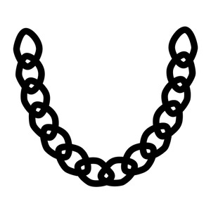

ⲕⲗⲁⲗ, ⲕⲗⲏⲗ S, ⲕⲗⲉⲗ SAA2F, ⲭⲗⲁⲗ B nn m, chain esp on neck: Ge 41 42 SB, Pro 1 9 SAB, Hab 2 6 AB κλοιός; Nu 31 50 S (B = Gk), 2 Kg 1 10 S, Jth 10 4 S χλίδων; AP 11 A2 ψέλλιον (var κλάλιον); dog's chain: Pro 7 22 SA δεσμός; Mor 31 203 S ⲟⲩϩⲁⲣ ⲉⲩⲉⲓⲛⲉ ⲙⲙⲟϥ ⲉⲡⲉⲕ., BMis 15 S captive ⲉϥⲥⲙⲟⲛⲧ ⲉⲡⲉϥⲕ. like dog; camel's: CO 218 S ⲙⲁⲛⲧⲁⲕⲏ (μανδάκη) ⲛⲕ.; BKU 1 21 vo F in dying recipe ⲕ. of nitre, BMEA 10391 S recipe ⲕ. ⲛϩⲙⲟⲩ, burnt & pounded, ShP 1314 111 S weaving tools ϩⲛⲁⲁⲩ ⲛⲕⲱⲗϩ…ⲕ. ⲛϫⲟⲗⲕⲟⲩ, ST 54 S ⲕ. as ἐνέχυρον. Cf κλάλιον. As name: Πεκλῆλ POxy 1917.
(noun
male)
tool
chain especially on neck [κλοιος, χλιδων]
dogs chain [δεσμος]
dogs chain [δεσμος]

1: chain, 2: chain (on neck), 3: dog
chain
complete
103a